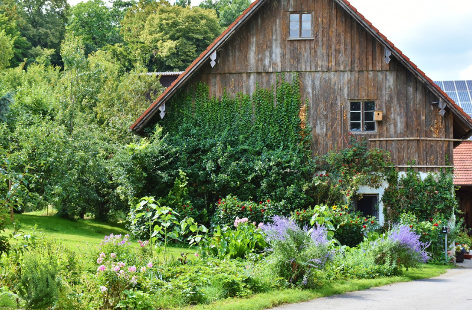

sejarah

Bandung berasal dari kata bendung atau bendungan Karena terbendungnya sungai Citarum oleh lava Gunung Tangkuban Parahu yang
lalu membentuk telaga. Legenda yang diceritakan oleh orang-orang tua di Bandung mengatakan bahwa nama Bandung diambil dan sebuah
kendaraan air yang terdiri dan dua perahu yang diikat berdampingan yang disebut perahu bandung yang digunakan oleh Bupati Bandung,
RA. Wiranatakusumah ll, untuk melayari Ci Tarum dalam mencari tempat kedudukan Kabupaten yang baru untuk menggantikan ibu kota
yang lama di Dayeuhkolot.
filosofi Sunda, kata Bandung juga berasal dari kalimat Nga-Bandung-an Banda Indung, yang merupakan kalimat sakral dan
luhur Karena mengandung nilai ajaran Sunda. Nga-Bandung-an artinya menyaksikan atau bersaksi. Banda adalah segala sesuatu yang
berada di alam hidup yaitu di bumi dan atmosfer, baik makhluk hidup maupun benda mati. Sinonim dari banda adalah harta. Indung berarti
lbu atau Bumi, disebut juga sebagai Ibu Pertiwi tempat Banda berada.
Geografis

Bandung dikelilingi oleh pegunungan, sehingga bentuk morfologi wilayahnya bagaikan sebuah mangkok raksasa, secara geografis
Kota ini terletak di tengah-tengah provinsi Jawa Barat, serta berada pada ketinggian +768 m di atas permukaan laut, dengan fitik teringgi di
berada di sebelah utara dengan ketinggian 1.050 meter di atas pemukaan laut dan sebelah selatan merupakan kawasan rendah dengan
Ketinggian 675 meter di atas permukaan laut.
Bandung dialin dua sungai utama, yaitu Sungai Cikapundung dan Sungai Citarum beserta anak-anak sungainya yang pada umumnya
mengalir ke arah selatan dan bertemu di Sungai Citarum. Dengan kondisi yang demikian, Bandung selatan sangat rentan terhadap masalah
banjir terutama pada musim hujan.
wisata
Sejak dibukanya Jalan Tol Cipularang, kota Bandung telah menjadi tujuan utama dalam menikmati liburan akhir pekan terutama dan
masyarakat yang berasal dari Jakarta sekitamya. Selain menjadi kota wisata belanja, kota Bandung juga dikenal dengan sejumlah besar
bangunan lama berarsitektur peninggalan Belanda.
Farm House Lembang

Berada di jalur utama Bandung-Lembang, Farm House menjadi objek wisata yang tidak pernah sepi pengunjung. Selain karena letaknya
strategis, kawasan ini juga menghadirkan nuansa wisata khas Eropa. Semua itu diterapkan dalam bentuk spot swafoto Instagramable.
Observatorium Bosscha

Memiliki beberapa teleskop, antara lain, Refraktor Ganda Zeiss, Schmidt Bimasakti, Refraktor Bamberg, Cassegrain GOTO, dan Teleskop
Surya. Refraktor Ganda Zeiss adalah jenis teleskop terbesar untuk meneropong bintang. Benda ini diletakkan pada atap kubah sehingga
saat teropong digunakan, atap tersebut harus dibuka. Observatorium Bosscha boleh dikunjungi oleh siapa pun, tanpa fiket. Namun, bagi
yang ingin menggunakan teleskop Zeiss, wajib mendaftarkan diri. Untuk instansi atau lembaga pendidikan, diberikan jadwal hari Selasa
sampai Jumat. Sementara itu, kunjungan individu dibuka setiap hari Sabtu.